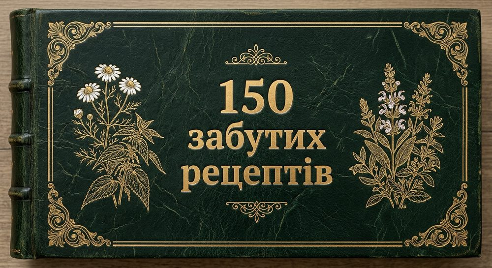

Травник діда Григорія. 150 домашніх засобів: настої та відвари для внутрішнього вживання, ванночки, компреси, лікувальні пов’язки, розтирання й аплікаційні пасти для зовнішнього застосування.

Домашні засоби для цієї теми — з точними пропорціями та застереженнями.
Домашні засоби для цієї теми — з точними пропорціями та застереженнями.
Домашні засоби для цієї теми — з точними пропорціями та застереженнями.
Домашні засоби для цієї теми — з точними пропорціями та застереженнями.
Домашні засоби для цієї теми — з точними пропорціями та застереженнями.
Домашні засоби для цієї теми — з точними пропорціями та застереженнями.
Домашні засоби для цієї теми — з точними пропорціями та застереженнями.
Домашні засоби для цієї теми — з точними пропорціями та застереженнями.
Домашні засоби для цієї теми — з точними пропорціями та застереженнями.
Домашні засоби для цієї теми — з точними пропорціями та застереженнями.
Домашні засоби для цієї теми — з точними пропорціями та застереженнями.
Дуже атмосферна й практична книга. Відчувається, що рецепти подані з турботою: усе зрозуміло, без складних пояснень і без незрозумілих інгредієнтів. Особливо сподобалося, що є не лише опис трав, а й точні пропорції та застереження.
— Олена К., Львів
Придбала книгу для мами, але в підсумку читаємо її всією родиною. Гарне оформлення, зручна структура й багато корисної побутової інформації. Це саме та книга, яку хочеться тримати вдома та час від часу переглядати.
— Наталія П., Київ
Нарешті знайшла збірник, у якому рецепти не написані загальними фразами. Є чітко вказано, що, скільки і як готувати. Дуже подобаються авторські примітки — вони створюють відчуття живої розмови з досвідченою людиною.
— Ірина М., Тернопіль
Книга вдало поділена за темами: сон, травлення, суглоби, застуда, шкіра, судини. Завдяки цьому легко знайти потрібний розділ, а не гортати сторінки навмання. Зручно, зрозуміло й гарно оформлено.
— Вікторія С., Вінниця
Особливо цінно, що в кожному рецепті є не тільки спосіб приготування, а й попередження. Автор не обіцяє дива, а нагадує про уважне ставлення до свого організму та сумісність із ліками. Це викликає довіру.
— Марія Д., Івано-Франківськ
«150 забутих рецептів» — не просто гарна книга про трави. Це акуратно зібраний домашній довідник із настоями, відварами, компресами, ванночками та зовнішніми засобами. Багато рецептів прості у приготуванні й не потребують екзотичних складників.
— Андрій В., Черкаси
Дуже красива книга з теплою атмосферою та зрозумілими рецептами. Вона одразу створює відчуття затишку й турботи.
— Людмила Р., Полтава
Зручна структура, точні пропорції, корисні застереження — усе на своєму місці. Читається легко.
— Сергій Б., Житомир
Чудовий подарунок для тих, хто любить трави, домашні традиції та дбайливий підхід до самопочуття.
— Галина О., Чернівці
Відчувається повага до народних знань і водночас обережний підхід до здоров’я. Саме цього часто бракує подібним виданням.
— Тетяна Л., Ужгород
Книга, яку хочеться залишити на кухонній полиці й перечитувати, коли потрібна проста та зрозуміла порада.
— Микола І., Дніпро
Гарне оформлення та справді практичний зміст. Видання виглядає як сімейний травник, що передається з покоління в покоління.
— Світлана Н., Одеса
Це електронна книга в PDF. Після оплати відкрийте розділ Files у своєму акаунті Whop і завантажте файл на телефон, планшет чи комп’ютер.
Оплата проходить у захищеній формі Whop просто на цій сторінці. Доступні способи залежать від вашої країни та пристрою: банківська картка, а також Apple Pay чи Google Pay, якщо їх підтримує пристрій.
Ні. Матеріали мають інформаційний характер. Якщо ви вагітні, маєте хронічні захворювання або приймаєте ліки, проконсультуйтеся зі спеціалістом.
Напишіть на ksi-74@ukr.net: вкажіть адресу, з якою купували, і опишіть проблему.
«150 Забутих рецептів» · PDF · $4.99 · оплата в захищеній формі Whop